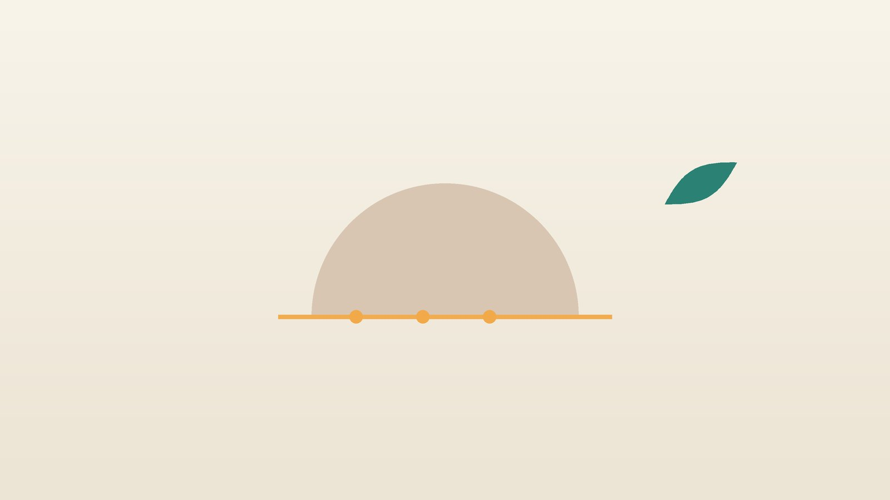

건강 칼럼 · 인천 족근관증후군 한의원
발바닥이 화끈거리고 저리다면, 족근관증후군 한방 치료

나의 발 저림, 이런 모습인가요?
- 발바닥이 저리거나 화끈거리고, 모래를 밟는 듯 이상하다
- 안쪽 복사뼈 뒤아래를 톡톡 두드리면 발바닥으로 찌릿함이 퍼진다
- 오래 서 있거나 걸은 뒤, 혹은 밤에 증상이 심해진다
- 한쪽 발에만 증상이 있다
- 발목을 심하게 삔 적이 있거나 평발이다
- 발뒤꿈치보다 발바닥 앞쪽과 발가락이 더 저리다
이 체크리스트는 진단 도구가 아니라 상담이 필요한지 가늠해 보는 참고용입니다.
족근관증후군은 왜 생기나요?
안쪽 복사뼈 뒤아래에는 뼈와 두꺼운 인대(굴근지대)가 지붕처럼 덮은 통로가 있고, 그 안으로 경골신경과 동맥·정맥, 발가락을 굽히는 힘줄들이 함께 지나갑니다. 신경은 이 근처에서 발바닥 안쪽·바깥쪽·뒤꿈치 가지로 나뉘어, 눌린 가지에 따라 저린 범위가 다릅니다.
통로가 좁아지는 원인으로는 발목 염좌나 골절 뒤의 붓기와 흉터, 발이 안쪽으로 무너지는 평발, 결절종 같은 혹, 늘어난 정맥, 힘줄의 염증, 당뇨나 갑상선 기능 저하로 인한 붓기 등이 있으며, 원인을 찾지 못하는 경우도 적지 않습니다. 미국 국립의학도서관의 StatPearls 정리에 따르면 진단은 증상과 진찰을 바탕으로 하고 신경전도검사와 근전도로 신경 손상을 확인하며, 혹이 의심되면 초음파나 MRI를 더합니다. 치료는 깔창과 활동 조절 같은 보존 치료로 시작합니다.
비슷한 저림, 어떻게 구분하나요?
- 당뇨 신경병증: 양쪽 발끝부터 대칭으로 시작해 양말을 신는 범위처럼 서서히 위로 올라옵니다. 감각이 무뎌져 상처를 모르고 지나치기 쉽습니다.
- 허리디스크(주로 다섯째 허리뼈·첫째 엉치뼈 신경): 허리나 엉덩이에서 종아리 뒤를 따라 발바닥·새끼발가락 쪽으로 뻗치며, 기침과 앉은 자세에서 심해지고 발목 반사가 약해지기도 합니다.
- 족저근막염: 발뒤꿈치 아래를 누를 때 아프고 아침 첫 걸음이 가장 괴로우며, 저리거나 화끈거리는 신경 증상은 대개 없습니다.
- 족근관증후군: 한쪽 발에 많고, 안쪽 복사뼈 뒤아래를 두드리면 발바닥으로 찌릿함이 번지는 것이 단서입니다.
두 가지 이상이 겹치기도 해, 저림이 오래가면 신경전도검사로 눌린 곳을 확인합니다.
발 저림인데 다른 진료가 먼저인 신호
- 발이 차갑고 창백하거나 검푸르며, 걸으면 종아리가 아프다 (혈관 질환 확인)
- 당뇨가 있는데 발에 상처가 생겨 잘 낫지 않는다
- 발목이 처져 발끝을 들기 어렵다
- 발이 갑자기 붓고 빨갛고 뜨겁다 (감염·통풍 확인)
- 저림이 양쪽 다리, 손까지 번지거나 걸음이 휘청인다
- 허리 통증과 함께 대소변 조절이 어렵다 (응급)
혈관 문제와 감염, 척추 신경의 심한 압박은 시간이 중요한 질환이라 해당 진료과에서 먼저 확인합니다.
한의학은 발바닥 저림과 화끈거림을 어떻게 보나요?
한의학에서는 저리고 감각이 둔한 것을 마목(麻木)이라 하여, 저릿저릿한 것을 마(麻), 남의 살처럼 무딘 것을 목(木)으로 나누어 보았습니다. 발바닥이 화끈거리는 것은 족심열(足心熱)이라 하여 몸의 음이 부족해 열이 아래로 뜨는 신호로 해석했습니다.
안쪽 복사뼈 뒤로는 신장과 연결된 족소음신경(足少陰腎經)이 지나 발바닥 한가운데의 용천(湧泉)에서 시작합니다. 그래서 과로와 나이 듦으로 신음이 부족하면 발바닥이 화끈거리고, 습열이 아래로 몰리면 붓고 무거우며, 발목을 다친 뒤 혈이 뭉치면 한 자리가 찌르듯 저리고, 기혈이 약하면 감각이 무뎌진다고 보아 유형을 나눕니다.
나의 발 저림은 어떤 유형일까?
1. 음허(陰虛) 발바닥이 화끈한 유형
- 이런 분에게 많아요
- 중년 이후, 밤샘과 과로가 잦은 분
- 나타나는 모습
- 밤에 발바닥이 뜨겁고 화끈거려 이불 밖으로 내놓는다
- 함께 오는 몸의 신호
- 입안이 마르고 자면서 땀이 나며 자주 깸
- 진찰에서 보이는 모습
- 혀끝이 붉고 태가 얇으며 맥이 가늘면서 빠르게 뜀
- 치료 방향
- 부족한 음을 채워 아래로 뜬 열을 내리는 방향 (지백지황환 계열)
- 오늘부터 해 볼 것
- 저녁 술과 매운 음식을 줄이세요.
2. 습열(濕熱) 붓고 무거운 유형
- 이런 분에게 많아요
- 오래 서서 일하고 체중이 늘어난 분
- 나타나는 모습
- 발목 안쪽이 붓고 오후가 되면 저림이 심해진다
- 함께 오는 몸의 신호
- 다리가 무겁고 소변이 진함
- 진찰에서 보이는 모습
- 설태가 누렇고 끈적함
- 치료 방향
- 습과 열을 걷어 붓기를 빼는 방향 (사묘산 계열)
- 오늘부터 해 볼 것
- 쉬는 시간마다 다리를 심장 높이로 올려 두세요.
3. 어혈(瘀血) 다친 뒤 뭉친 유형
- 이런 분에게 많아요
- 발목을 심하게 삐었거나 골절이 있었던 분
- 나타나는 모습
- 복사뼈 뒤가 찌르듯 저리고 한 자리를 누르면 아프다
- 함께 오는 몸의 신호
- 발목 주변의 굳은살 같은 단단함, 거무스름한 피부
- 진찰에서 보이는 모습
- 혀가 어둡고 맥이 껄끄러움
- 치료 방향
- 뭉친 혈을 풀어 통로의 압박을 줄이는 방향 (도홍사물탕 계열)
- 오늘부터 해 볼 것
- 발목 둘레를 조이는 양말과 신발을 피하세요.
4. 기혈허(氣血虛) 감각이 무뎌지는 유형
- 이런 분에게 많아요
- 오래 앓았거나 당뇨처럼 만성 질환이 있는 분
- 나타나는 모습
- 발바닥이 남의 살 같고 저림이 은근히 오래간다
- 함께 오는 몸의 신호
- 손발 냉증, 피로, 얼굴빛이 창백함
- 진찰에서 보이는 모습
- 혀가 옅고 맥이 약함
- 치료 방향
- 기혈을 보태 말단의 감각을 돕는 방향 (황기계지오물탕 계열)
- 오늘부터 해 볼 것
- 잠들기 전 따뜻한 물에 발을 담그되 온도는 손으로 먼저 확인하세요.
한의원에서는 어떻게 진찰하나요?
- 저림 지도: 저린 범위가 발바닥 안쪽인지, 바깥쪽인지, 뒤꿈치인지, 양쪽인지를 그려 봅니다.
- 두드림 검사: 안쪽 복사뼈 뒤아래를 가볍게 두드려 발바닥으로 찌릿함이 퍼지는지 확인합니다.
- 감별 진찰: 허리와 다리의 신경 검사, 발뒤꿈치 압통, 발 모양과 걸음을 살피고, 당뇨와 갑상선 검사 결과를 확인합니다. 신경전도검사가 필요하면 권해 드립니다.
- 설진·맥진: 음허, 습열, 어혈, 기혈허 중 중심을 판단합니다.
침·약침·한약 치료는 어떻게 하나요?
1. 침 치료
- 태계(太谿): 안쪽 복사뼈 꼭짓점 높이에서 뒤쪽 굵은 힘줄과의 사이에 생기는 우묵한 자리. 족근관 입구 바로 위입니다.
- 조해(照海): 안쪽 복사뼈 꼭짓점에서 곧장 아래로 내려와 움푹 꺼지는 자리.
- 연곡(然谷): 발 안쪽 가장자리, 배 모양의 뼈(주상골) 튀어나온 곳 아래.
- 삼음교(三陰交): 안쪽 복사뼈 꼭대기에서 손가락 네 마디 위, 정강이뼈 뒤쪽. 임신 중에는 쓰지 않습니다.
통로 한가운데는 깊게 찌르지 않으며, 당뇨가 있는 분은 피부 상태를 먼저 확인합니다.
2. 약침·초음파 가이드 약침과 온열 요법
약침은 일반 약침과 초음파 가이드 약침을 모두 시행하며, 아픈 부위의 깊이와 주변 구조에 따라 진찰 후 골라 씁니다. 초음파 가이드 약침은 초음파 화면으로 바늘 끝을 확인하면서 놓는 방식입니다. 안쪽 복사뼈 아래로 지나는 경골신경과 혈관을 초음파로 확인하며 약침을 놓아 신경을 피합니다. 족근관 주변과 종아리 안쪽의 굳은 근육에 약침을 시행해 국소 순환을 돕습니다. 발이 찬 분에게는 온열 요법을 시행하되, 감각이 무뎌진 분은 화상을 입지 않도록 온도를 낮춰 진행합니다.
3. 한약
유형별 탕약으로 열을 내리거나 붓기를 빼고, 뭉친 혈을 풀거나 기혈을 보탭니다. 당뇨·갑상선 약이나 신경통 약을 드시는 분은 알려 주시면 확인해 처방하며, 기존 약은 임의로 끊지 마세요. 한약은 원장이 원내 탕전실에서 약재 선별부터 달이는 과정까지 직접 관리하며, 10일분씩 처방해 복용 경과를 보고 약재 구성과 양을 조절합니다. 아픈 자리는 초음파 가이드 약침과 추나로 다스리고, 통증이 오래가게 만드는 몸속의 기혈 순환과 장부 기능은 체질에 맞춘 한약으로 함께 살피면 통증 완화와 재발 관리를 함께 도모할 수 있습니다.
원장님이 네이버 블로그에 진료 이야기와 건강 정보를 꾸준히 올리고 있습니다. 더 많은 이야기는 블로그에서 확인해 보세요.
블로그 보기치료는 어떤 순서로 진행되나요?
- 첫 진료 다른 원인과 감별하고 저림 범위와 강도를 기록하며, 필요하면 신경전도검사를 안내합니다.
- 1~3주 주 2회 안팎의 침·약침으로 저림과 화끈거림을 줄이고 신발과 깔창을 점검합니다.
- 3~8주 증상 기록을 비교하며 탕약과 치료 간격을 조정합니다.
- 점검 저림이 줄지 않거나 근력이 떨어지면 영상 검사나 수술 상담을 권해 드립니다.
신경의 회복은 천천히 진행되어 몇 주에서 몇 달에 걸쳐 경과를 봅니다.
발목 신경을 아끼는 생활 관리
- 신발과 깔창: 발이 안쪽으로 무너지는 평발이라면 아치를 받쳐 주는 깔창과 뒤꿈치가 단단한 신발을 고릅니다.
- 조이는 것 피하기: 발목을 조이는 양말과 부츠는 통로를 누를 수 있습니다.
- 붓기 관리: 오래 서 있었다면 누워서 다리를 올리고, 짠 음식을 줄입니다.
- 발 살피기: 당뇨가 있다면 매일 발바닥과 발가락 사이에 상처가 없는지 거울로 확인합니다.
- 지압: 안쪽 복사뼈 아래 조해 자리를 엄지로 부드럽게 30초씩 눌러 주되, 찌릿함이 심해지면 멈춥니다.
다른 진료가 함께 필요한 경우
- 저림이 몇 주 넘게 이어지면 신경전도검사와 근전도를 받아 보세요.
- 복사뼈 뒤에 만져지는 혹이 있으면 초음파나 MRI로 확인하세요.
- 양쪽 발끝부터 저리면 혈당과 비타민 B12, 갑상선 검사를 받아 보세요.
자주 묻는 질문 Q&A
- Q1. 족저근막염과 족근관증후군은 어떻게 다른가요?
- 족저근막염은 뒤꿈치 아래를 누를 때 아프고 아침 첫발이 괴로운 반면, 족근관증후군은 발바닥이 저리고 화끈거리는 신경 증상이 중심입니다.
- Q2. 당뇨가 있는데 발이 저려요. 족근관증후군인가요?
- 당뇨 신경병증일 수도, 두 가지가 함께일 수도 있습니다. 신경전도검사로 확인하는 것이 좋습니다.
- Q3. 신경전도검사는 어디서 받나요?
- 재활의학과나 신경과에서 받을 수 있습니다.
- Q4. 깔창만으로 좋아질 수 있나요?
- 평발이 원인이라면 도움이 되는 경우가 많지만, 혹처럼 누르는 구조물이 있으면 다른 치료가 필요합니다.
- Q5. 수술을 꼭 해야 하나요?
- 대부분 보존 치료로 시작하며, 혹이 뚜렷하거나 오래 낫지 않고 근력이 떨어질 때 수술을 고려합니다.
- Q6. 밤에 발이 화끈거려 잠을 못 자요.
- 발을 서늘한 곳에 두되 얼음을 직접 대지 말고, 진찰 후 유형에 맞춰 관리합니다.
- Q7. 치료는 얼마나 받아야 하나요?
- 보통 4~8주 동안 저림 정도를 기록하며 경과를 봅니다.
- Q8. 혈당약을 먹고 있는데 한약을 같이 먹어도 되나요?
- 같이 드시는 경우가 많습니다. 혈당약 이름을 알려 주시면 확인해 처방하며, 혈당약은 그대로 드세요.
문원열 대표원장한의사 · 365스마일한의원
임상 경력 15년, 인천 서구 가정동에서 개원 후 10년째 진료하고 있으며, FCST 턱관절학회·연부조직학회·침도학회 등에서 활동합니다. 아픈 곳만이 아니라 증상의 원인을 찾아 진료합니다.
진료 안내
- 진료시간
- 평일 09:00~20:00 (점심시간 13:00~14:00, 접수 마감 19:30)
토·일·공휴일 09:00~15:00 (접수 마감 14:30) - 주소
- 인천광역시 서구 가경주로 46, 2층 (가정동)
인천2호선 가정중앙시장역 인근
영상으로 길 안내 보기 → - 주차
- 한의원 건물 바로 앞 1층 도원주차장
- 예약
- 예약 바로가기 또는 전화 예약
진료시간은 사정에 따라 바뀔 수 있으니 방문 전 전화로 확인해 주세요.
참고 자료
- Kiel J, Kaiser K. Tarsal Tunnel Syndrome. StatPearls, National Library of Medicine
- 질병관리청 국가건강정보포털 — 원문
※ 이 글은 일반적인 건강 정보이며, 개인의 상태에 따라 치료 방법과 결과는 다를 수 있습니다. 정확한 진단과 치료는 진료를 통해 결정됩니다. 침·약침 시술 후 드물게 멍, 통증 등이 생길 수 있습니다.